信息查询
天气、百科、资讯即时应答
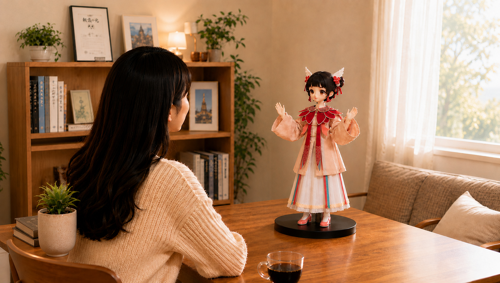
全天候 · 主动式 · 深度情感陪伴
这一次，AI 站起来，走到了你身边。小而智能的桌面级入口——能感知你的情绪、记住你的习惯、在你需要时主动靠近。全栈自研三大系统，让经典 IP 在书桌旁真正「活」过来，在每一次互动里积累属于彼此的记忆。
产品整体效果
手办级精致外观 · 游戏级自然动作 · 类人级贴心回应——看得见情绪，听得懂沉默。
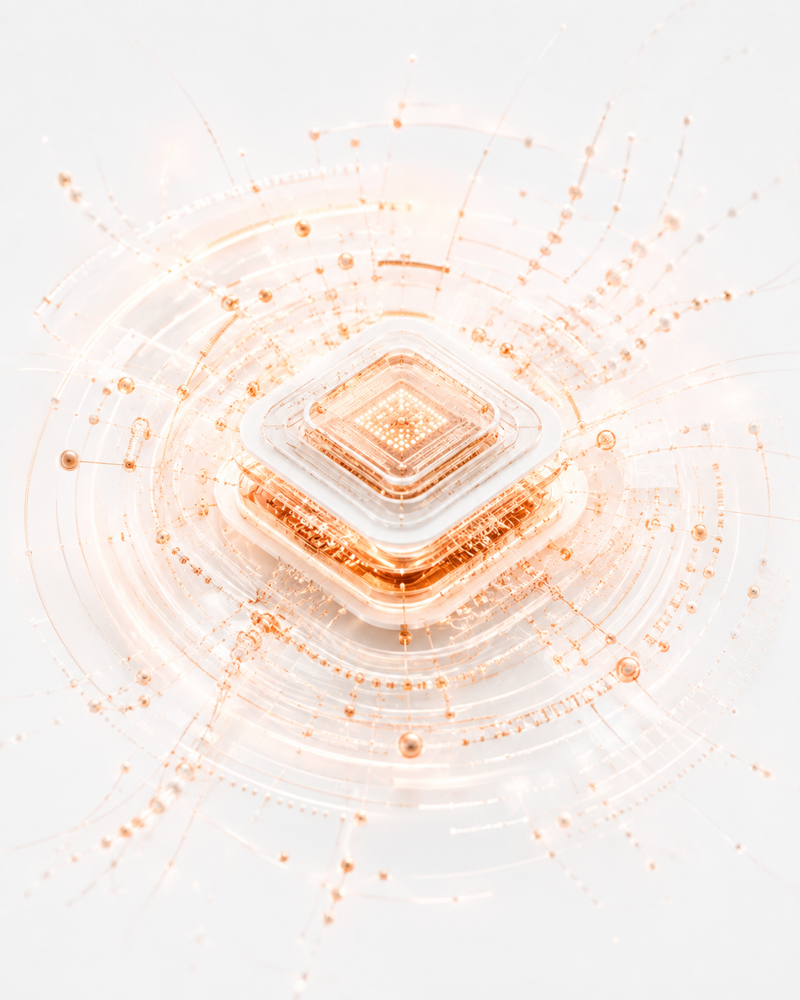
手办级 · 超类人
一体无缝皮肤 · 100% 类人触感 · 可换装
当你看到它的第一眼，感受到的是角色本身，而不是冰冷的机械结构。神态、比例与材质共同消融「玩具感」，让 IP 真正降临桌面。
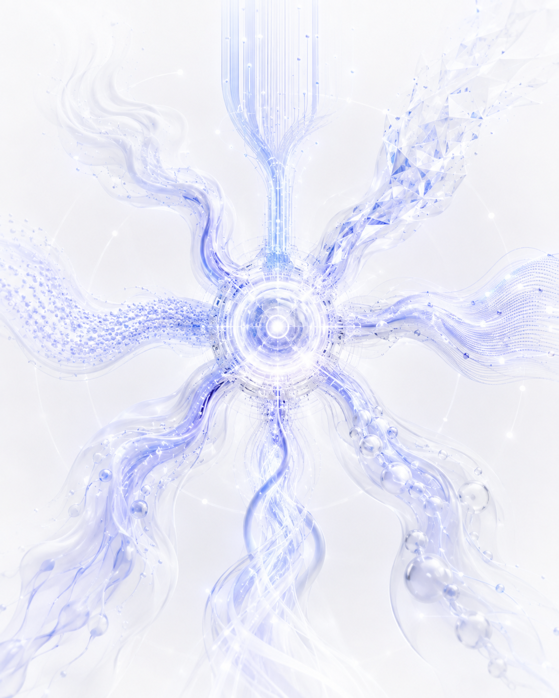
游戏级 · 超自然
50Hz 规划 · Text-to-Motion · 非预录
它说话的方式、停顿与情绪反应，都贴近你心中的那个角色。交流不再是「问答」，而像与熟悉的人对话，有温度、有立场、有记忆。
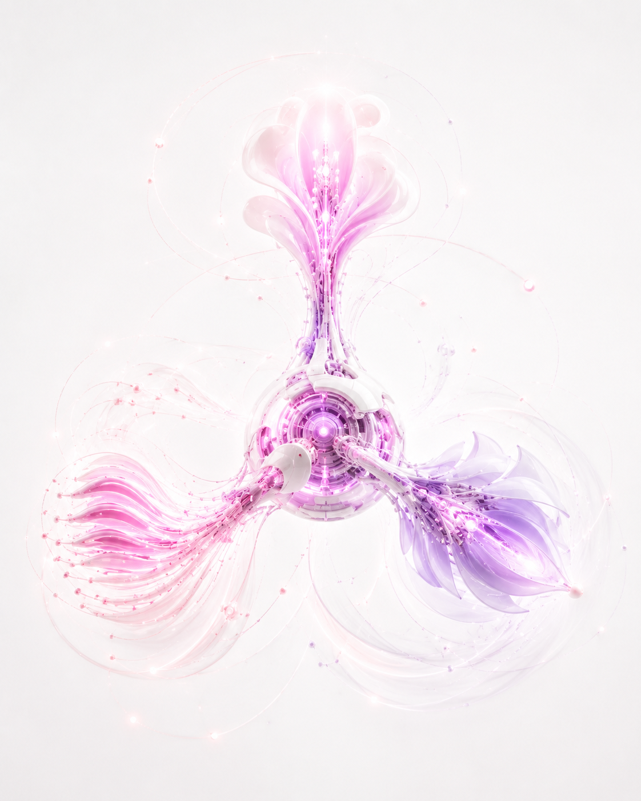
类人级 · 超聪明
9 模态感知 · Memora 记忆 · <400ms 端侧
一个眼神、一次抬手、一段舞蹈，动作连贯而自然。你会忘记它在执行程序，而觉得它真的在表达此刻的心情。
自研厘米级微型伺服减速电机系统，实现<50cm机器人高度范围内的高自由度集成，能够还原人的大部分肢体与表情活动，显著提升交互体验。
有限机器人空间内集成百余颗多模态感知芯片，并通过遍布机器人全身的分布式计算芯片实现复杂感知、实时计算及运动反馈。
具备类人的多种模态数据感知，全面理解用户、环境与自身状态，为深度认知提供最完整的信息支撑，视觉语音输入可物理遮挡保护用户隐私。
由统一情感计算引擎调度类人多维度输出，以人的表达方式实现人机交互，它不再是呆滞的机器，而是活灵活现地自由表达的生命体。
FUNCTIONAL VALUE
像真正的智能体一样，帮你把事做完
信息查询、日程安排、提醒跟进与多轮任务执行——桌面终端不只是对话，更是可落地的个人 Agent 能力。
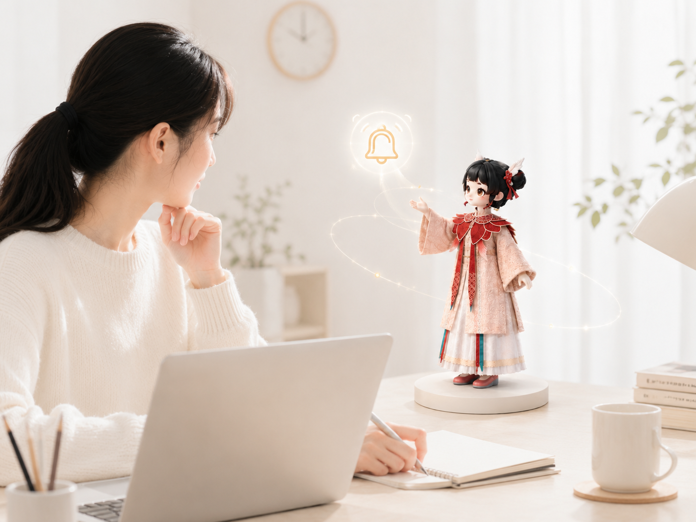
COMPANION VALUE
让你真正被看见、等待、轻轻回应
主动感知情绪与在场，持续养成属于你们的默契。沉默时有陪伴，归来时有等待——额头贴贴、一起笑、一起玩，让温度留在实体互动里。
ECOSYSTEM VALUE
以终端为底座，向上展开开放生态
技能、内容、IP 与第三方接口在终端之上生长。硬件是入口，生态让能力持续扩展。
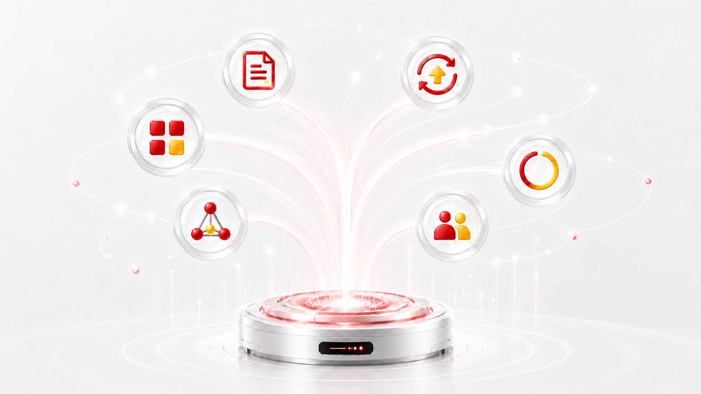
持续扩展机器人能力
角色内容与互动体验
持续迭代软硬件体验
连接更多服务与场景
用户与开发者共同创造
使用越久，体验越懂你
EXPLORE MORE
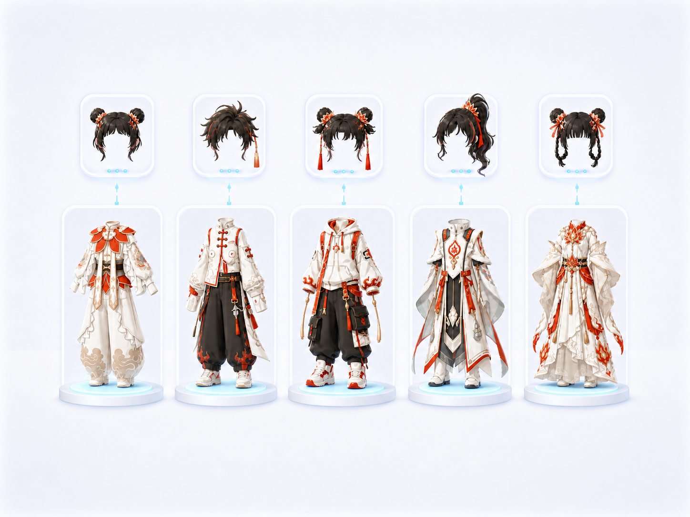
百变穿搭体验
采用模块化磁吸设计，从发型、服饰到手持道具皆可自由更换。无论是国潮古风还是未来机甲，她的风格由你的审美定义。
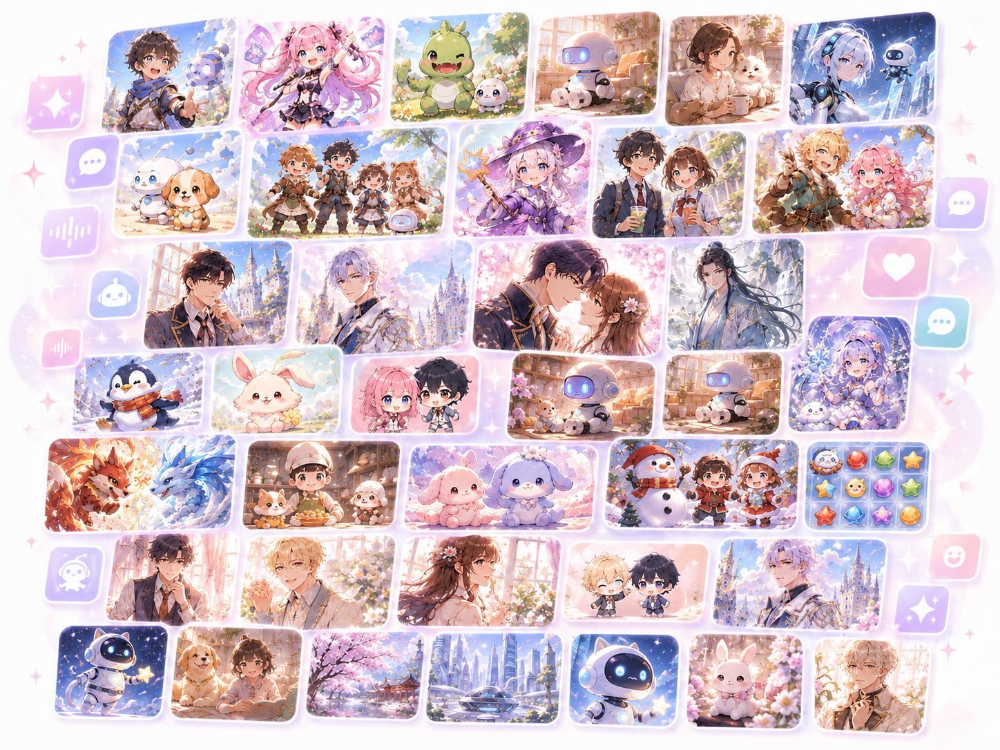
顶级 IP 内容矩阵
携手全球知名动漫与游戏 IP，推出限定角色包，内置原版声优语音与专属剧情动作，真正打破次元壁。
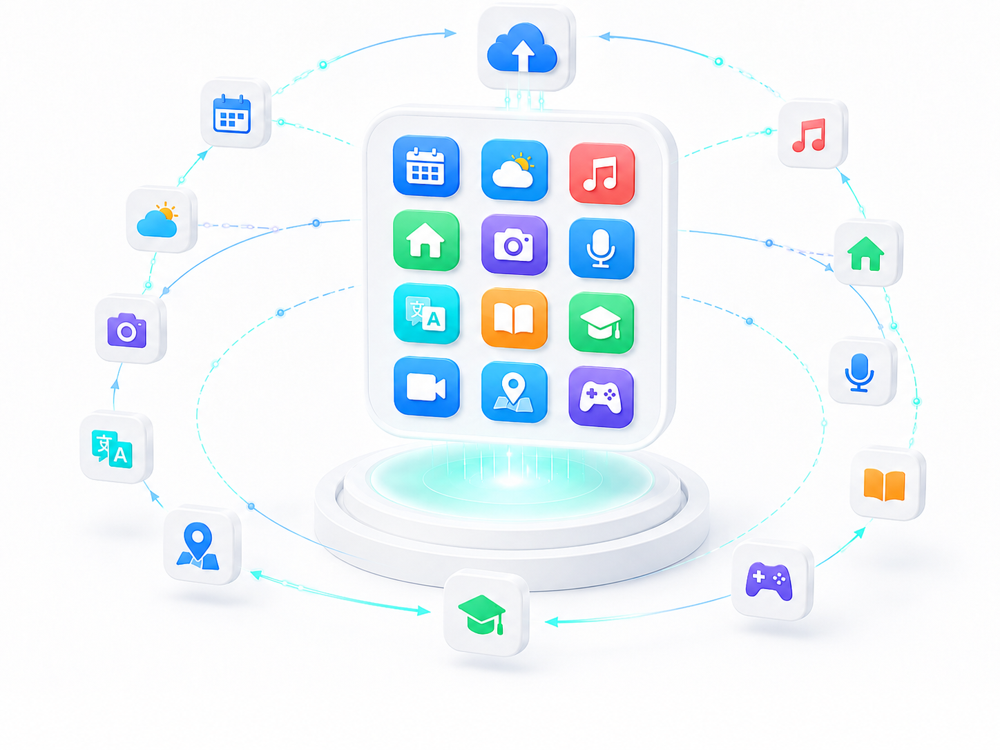
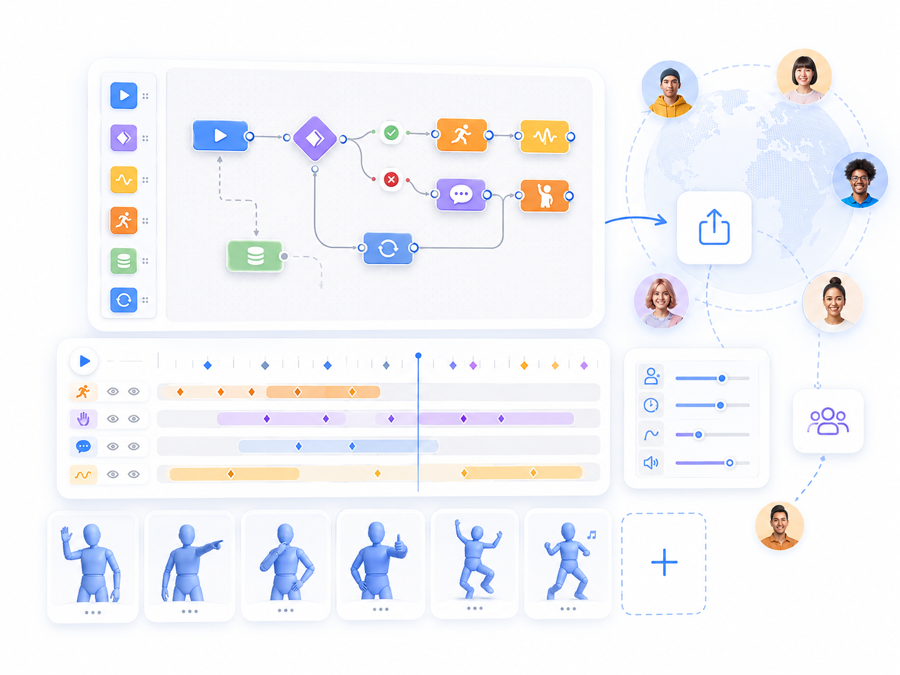
更多可能
持续拓展场景边界，更多能力即将解锁。
TERMINAL EVOLUTION
终端的演进，不只是屏幕变小或算力变强：信息从被动读取走向双向理解，功能从手动操作走向目标自主完成。
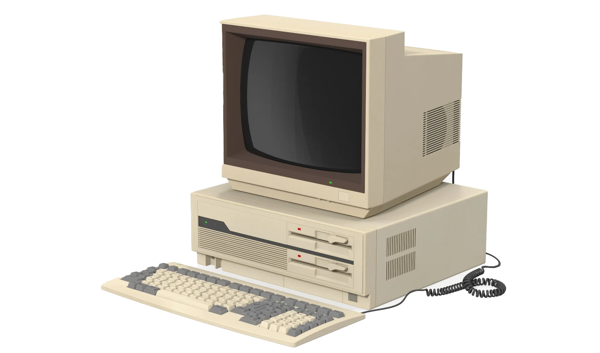
键鼠 · 固定空间
计算能力进入个人空间，但信息和功能仍被固定在桌面，任务依赖人逐步操作。
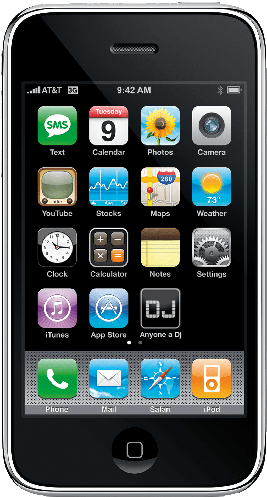
触屏 · 移动互联
连接和服务随身化，信息触达更快，但功能仍分散在应用中，由人主动点击调度。
多模态 · 主动服务
语言、表情、动作与环境感知共同承载信息；终端理解意图并调度能力完成目标，从工具入口进化为在场的智能体。
订阅获取最新产品动态与行业资讯